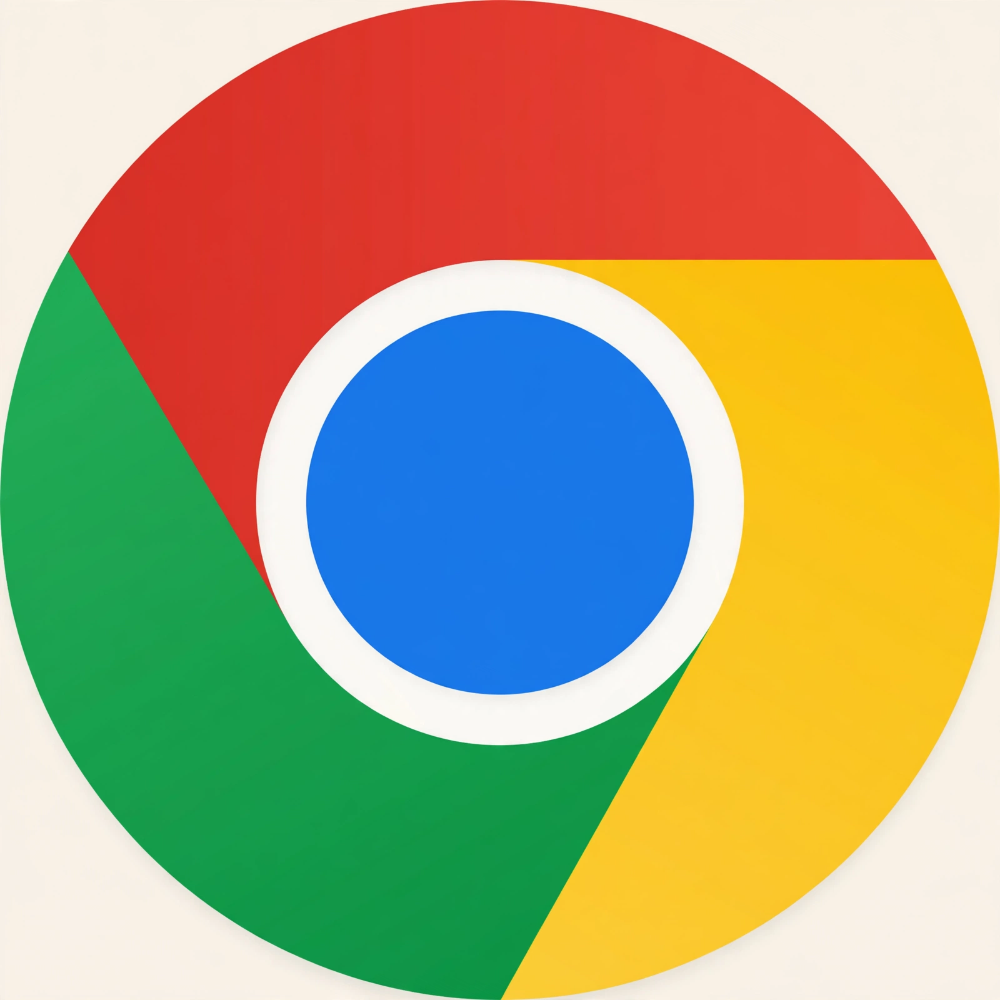

Google Chrome
| Google Chrome | |
|---|---|
| Released | 2 September 2008 |
| Developer | |
| Engine | Blink, V8 JavaScript engine |
| Written in | C++ and others |

The Google Chrome logo: a circle in blue surrounded by red, yellow and green segments
Google Chrome is a web browser developed by Google. It was first released in 2008 for Microsoft Windows, built with free software components from Apple WebKit and Mozilla Firefox. It was later ported to Linux, macOS, iOS, and Android, where it is the default browser on many devices.
Chrome was released as a surprise: Google had publicly opposed building a browser, and its announcement came via a comic book drawn by Scott McCloud, mailed to journalists. Its technical pitch was speed and stability — a multiprocess architecture isolating each tab, the fast V8 JavaScript engine, a minimalist interface with a combined address-and-search 'Omnibox', and silent automatic updates. It overtook Internet Explorer as the world's most-used browser around 2012 and has held a majority share of global browsing since.
Chrome's dominance — roughly two-thirds of the browser market in the 2020s — makes its engine (Blink, forked from WebKit in 2013) close to a web standard in itself, and most rival browsers (Microsoft Edge, Opera, Brave) are now built on its open-source Chromium base. Critics argue this concentrates power over web standards in Google, whose advertising business also drew scrutiny over Chrome's long-delayed plan to phase out third-party cookies.